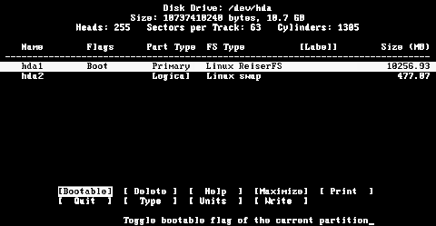

These instructions assume that you will create a single partition to hold Salix, plus a swap partition, as an illustration; however, cfdisk can create any partitioning scheme required. Note that you can also delete partitions (which will irrevocably destroy their contents). New partitions can be created in free space. For the purposes of this example, it is assumed the entire disk is free. Swap, if you need it, should normally be twice your RAM, so if that is 250 MB, swap should be 500 MB. If you have more than 2 GB of RAM, you needn't take this rule too strictly and you can have smaller sized swap partitions.
You can move between the commands listed at the bottom of the screen with the arrow keys, or select the command by typing the first letter, such as 'Q' to Quit.

SCSI harddisks are named with sdx, where x is a harddisk letter. The disk with the lowest SCSI ID on the first controller will become sda, the next after that, sdb, and so on.
GNU/Linux systems often use a partition scheme inherited from MS-DOS. With this, a harddisk can have up to four primary partitions. If you want more, you have to make one of these an extended partition where you can make several logical partitions. The partitions are named with the disk they belong to, and a number. The first primary partition on the first disk is therefore sda1, the second primary partition is sda2, and so on. The first and second logical partition on an extended partition on the first disk is sda5 and sda6, and so on.
After cfdisk is started you'll get an interface where the current partition table is listed with the names and some data about each partition and some command buttons on the bottom of the screen. To change between partitions, use the up and down arrow keys. To change between commands, use the left and right arrow keys.
To delete an existing partition, highlight it with the up and down
keys, select the Delete command with the left and right arrow keys and
press Enter or just press D.
To make a new partition, select the New command with the left and
right arrow keys, and press Enter. You'll get the choice between
a primary and a logical partition. If you want a logical partition, the
program will automatically make an extended partition for you. Then you
must choose the size of the partition (in MB). If you can't enter a
value in MB, return to the main screen with the Esc key
and select MB with the Units command.
To set the type of a partition, highlight the desired partition and
select the Type command. You'll get a list of different types.
Press space, and you'll get even more. Find what type you need,
and enter the number at the prompt. Linux is 83, Linux
swap is 82.
To be able to boot from a primary partition, you need to make it bootable. Highlight the partition and select the Bootable command.
When you are content with the layout of the disk, select the Write command. The partition table will be written to disk. Remember that this will destroy all data on partitions you have deleted or changed. You should, therefore, be very sure that you want to do this before actually pressing the Return key.
To exit the program, select the Quit command. The installer will then detect any partitions you have created and offer you the option to assign mount points to them.